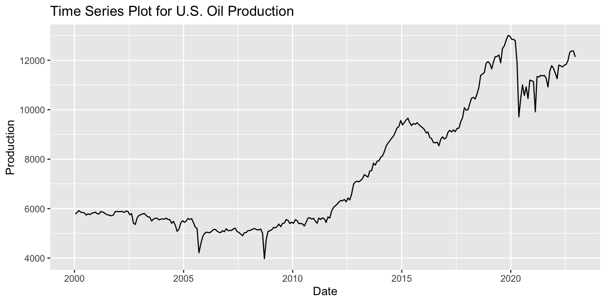
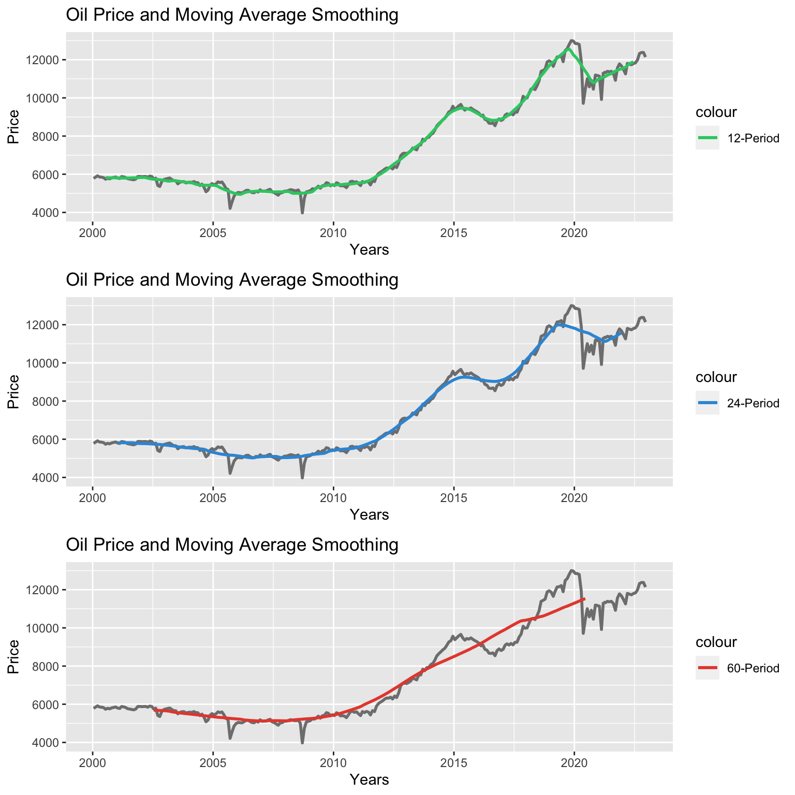
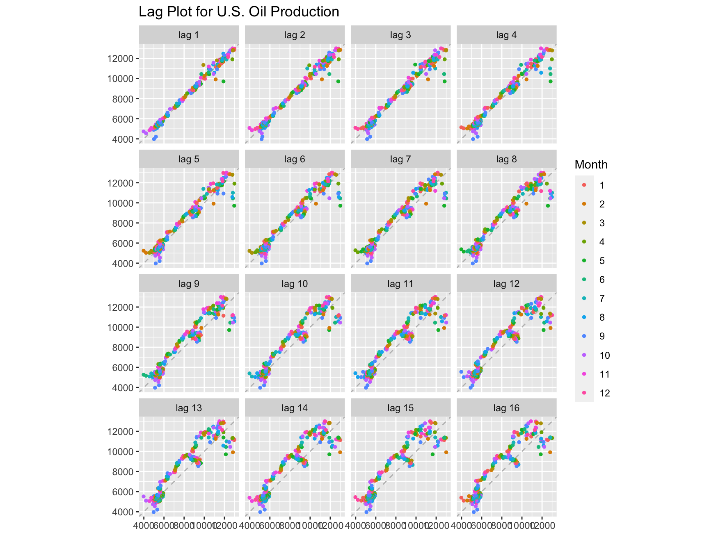
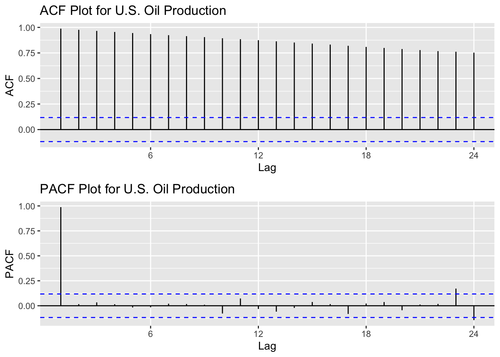
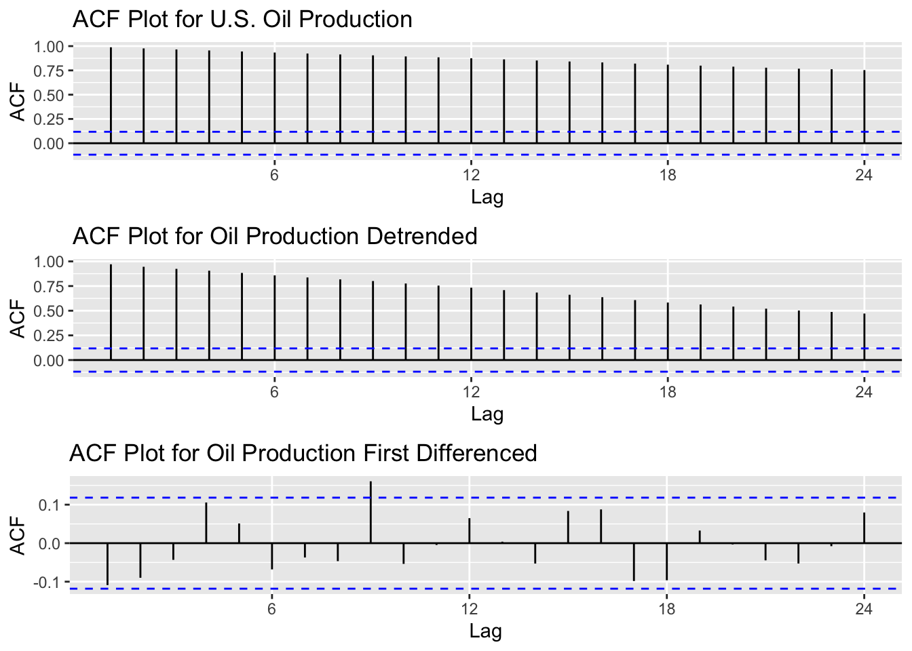

U.S. Oil Production by Month
In this section, I will explore some key steps in the time series exploratory data analysis of the global oil production dataset. As it was mentioned earlier, the focus will be on U.S. data. For each step, I will provide the code that has been used to create the visualizations and analysis, as well as insightful explanations and thorough analysis, to facilitate a deeper understanding of the dataset.
The plot below shows a table trend between the years 2000 and 2010. Since 2010 we can see a clear upward trend. There is no evidence of seasonality or cyclical patterns for this time series data set. We hypothesize that analysis of this information in the future may lead to a multiplicative pattern.
Plot
Time Series Plot Code
# Import dataset
df_oil_production_us <- read_csv('../data/viz_us_oil_production.csv')
# Filter information
df_oil_production_us <- df_oil_production_us %>% filter(year(Date) >= 2000 & year(Date) <= 2022)
# Check for missing values
# is.na(df_oil_production_us)
# Create the timeseries object
ts_us_oil_production <- ts(df_oil_production_us$Production,star=decimal_date(as.Date("2000-01-15",format = "%Y-%m-%d")),frequency = 12)
# Create time series plot
ggplot(df_oil_production_us, aes(x = Date, y = Production)) +
geom_line() + # Use geom_line() for a time series plot
labs(
title = "Time Series Plot for U.S. Oil Production",
x = "Date",
y = "Production"
)
Moving Average Smoothing
Moving average smoothing is useful for identifying trends and patterns in time series data. By applying it over different smoothing periods, we can gain insight into how these affect the data.
In this case, we have applied 3 smoothing periods. The 12-period moving average is a short-term perspective that shows the impact of fluctuations from the previous period. The 24-period moving average is useful for reducing short-term noise and identifying seasonal factors. The 60-period moving average is a long-term perspective used to identify long-term trends and the presence of economic cycles. In this specific case, the smoothing techniques clearly expose an upward trend in us oil production.
Moving Average smoothing
# List of months
date_seq <- seq(as.Date("2000-01-15"), length.out = length(ts_us_oil_production), by = "month")
# Moving Average Smoothing - small number
mas_1_oil_production <- ma(ts_us_oil_production, order = 12)
# Moving Average Smoothing - medium number
mas_2_oil_production <- ma(ts_us_oil_production, order = 24)
# Moving Average Smoothing - high number
mas_3_oil_production <- ma(ts_us_oil_production, order = 60)
# Plot the Time Series and the Moving Average Smoothing curves
mas_1_plot <- ggplot() +
geom_line(aes(x = date_seq, y = ts_us_oil_production, color = "Original"), size = 1) +
geom_line(aes(x = date_seq, y = mas_1_oil_production, color = "12-Period"), size = 1) +
scale_color_manual(values = c("Oil Price" = "black", "12-Period" = "#2ECC71")) +
labs(title = "Oil Price and Moving Average Smoothing", x = "Years", y = "Price")
# Plot the Time Series and the Moving Average Smoothing curves
mas_2_plot <- ggplot() +
geom_line(aes(x = date_seq, y = ts_us_oil_production, color = "Original"), size = 1) +
geom_line(aes(x = date_seq, y = mas_2_oil_production, color = "24-Period"), size = 1) +
scale_color_manual(values = c("Oil Price" = "black", "24-Period" = "#3498DB")) +
labs(title = "Oil Price and Moving Average Smoothing", x = "Years", y = "Price")
# Plot the Time Series and the Moving Average Smoothing curves
mas_3_plot <- ggplot() +
geom_line(aes(x = date_seq, y = ts_us_oil_production, color = "Original"), size = 1) +
geom_line(aes(x = date_seq, y = mas_3_oil_production, color = "60-Period"), size = 1) +
scale_color_manual(values = c("Oil Price" = "black", "60-Period" = "#E74C3C")) +
labs(title = "Oil Price and Moving Average Smoothing", x = "Years", y = "Price")
# Arrange Plots
#grid.arrange(mas_1_plot, mas_2_plot, mas_3_plot, nrow=3)
# Path to save plot
file_path <- "../images/5_oil_production_month.png"
# Use ggsave to save the plot as a PNG image
ggsave(grid.arrange(mas_1_plot, mas_2_plot, mas_3_plot, nrow=3), filename = file_path, width = 10, height = 8)
Lag Plots
Lag plots were then used to plot the time series data. We see high correlation for most of the lags plotted. From lag 11 we can still see correlation but the points are spread from the line.
Lag Plot Code
# Resize Plots
#options(repr.plot.width = 25, repr.plot.height = 6)
# Lag Plot
gglagplot(ts_us_oil_production, do.lines=FALSE)+ggtitle("Lag Plot for U.S. Oil Production")
Autocorrelation Plots
Observing the plot above, we can say that there is no evidence of additive or multiplicative patterns throughout the time series. Therefore, no decomposition methods are applied to this time series.
We plot the ACF to find the autocorrelation of the series with its lagged values. In this plot we can observe high autocorrelation for all the lags.
The PACF is a partial autocorrelation function. We plot the PACF to find the correlation of the residuals with the next lag. There is a high partial autocorrelation in lag 1, indicating a meaningful relationship between the time series and the lag. The following lags fall within the confidence bands, indicating that there is no partial autocorrelation at those lags.
ACF and PACF Plot Code
# Resize plots
options(repr.plot.width = 5, repr.plot.height = 2)
# ACF Plot
acf_us_oil_production <- ggAcf(ts_us_oil_production, main="ACF Plot for U.S. Oil Production")
# PACF Plot
pacf_us_oil_production <- ggPacf(ts_us_oil_production, main="PACF Plot for U.S. Oil Production")
# Arrange Plots
grid.arrange(acf_us_oil_production, pacf_us_oil_production, nrow=2)
Augmented Dickey-Fuller Test
Below we can observe the results obtained when the Augmented Dickey-Fuller test was applied to the time series. The p-value is equal to 0.5913, which is higher than the 0.05 significance level. Considering the null hypothesis that the time series is not stationary, we fail to reject it, so we need to apply time series detrending and differencing methods to try to make it stationary.
Augmented Dickey-Fuller Test Code
# Augmented Dickey-Fuller Test calculation
test_us_oil_production <- adf.test(ts_us_oil_production)
# Print results
print(test_us_oil_production)
Augmented Dickey-Fuller Test
data: ts_us_oil_production
Dickey-Fuller = -1.9638, Lag order = 6, p-value = 0.5913
alternative hypothesis: stationaryDetrending and Differencing
To obtain a stationary time series, we applied the detrending method to the fitted model of the time series and plotted the result in the ACF plot. Next, we also applied the differencing method to the original time series and plotted the result in the ACF plot. The ACF plot of the original time series is shown first to compare the different models.
Detrending and Differencing Code
options(repr.plot.width = 6, repr.plot.height = 6)
# Create fit data
fit_us_oil_production <- lm(ts_us_oil_production~time(ts_us_oil_production), na.action=NULL)
# ACF Detrended Plot
acf_2_us_oil_production <- ggAcf(resid(fit_us_oil_production), main="ACF Plot for Oil Production Detrended")
# ACF Differenced Plot
acf_3_us_oil_production <- ggAcf(diff(ts_us_oil_production), main="ACF Plot for Oil Production First Differenced")
# Arrange Plots
grid.arrange(acf_us_oil_production, acf_2_us_oil_production, acf_3_us_oil_production, nrow=3)
The ACF plot for the detrended fitted model clearly shows high autocorrelation, as the values are higher than the confidence band.
On the other hand, the ACF plot for the differenced model clearly shows that there is no autocorrelation left, as most lags are within the confidence band. Therefore, we conclude that when the first differencing method is applied to the time series, it turns out to be stationary.